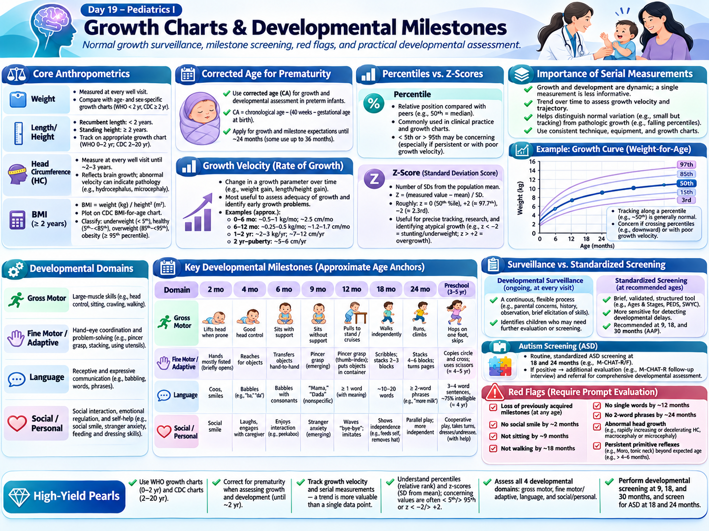
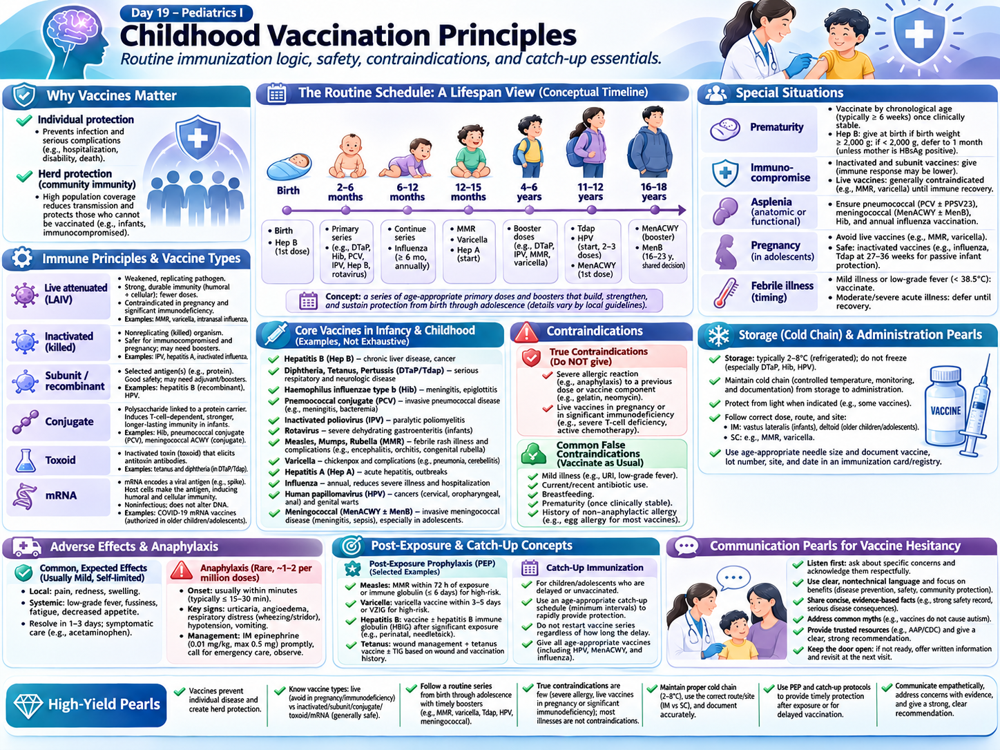
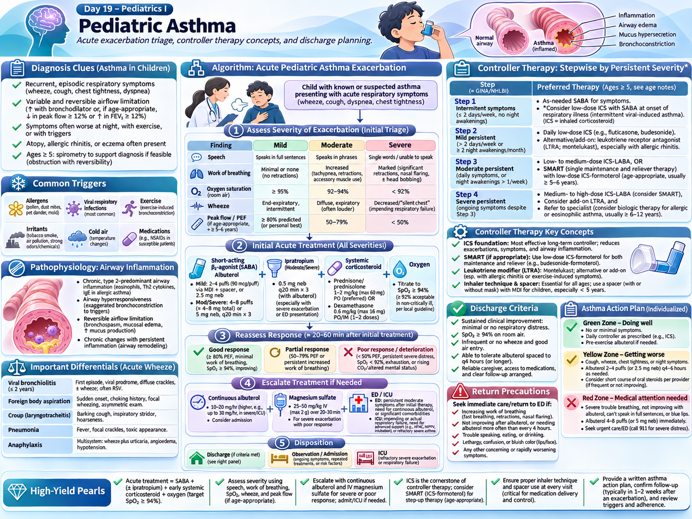
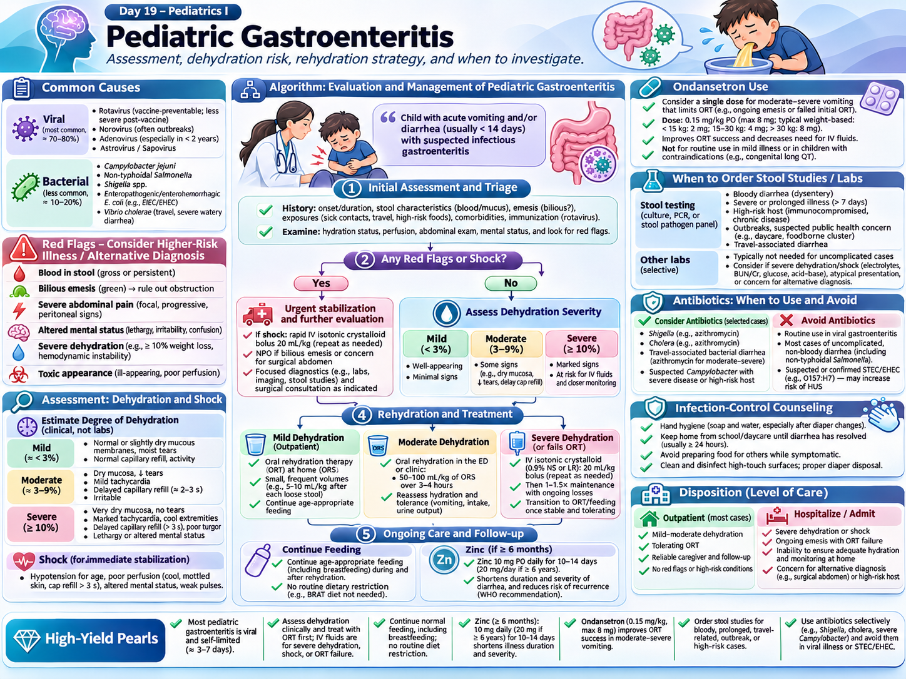

Day 19 — Pediatrics I
Physician / DOH-exam depth: diagnostic thresholds, age-specific red flags, investigations, treatment doses, disposition decisions, exam traps and local Abu Dhabi references.
80 questions
1. Growth Charts & Developmental Milestones
Physician-level, DOH-focused review: recognition, differential diagnosis, investigations, treatment, disposition and exam traps.
What the physician must assess
- At every well-child visit document weight, length/height, head circumference (birth–2 y) and BMI from age 2 y. Plot serial values; a single percentile is less important than the trajectory and growth velocity.
- Use WHO standards from birth to 2 years and CDC charts from 2–20 years when following the common US/WHO framework. For preterm infants, use corrected age during early childhood and preterm-specific charts initially.
- Always interpret growth in context: parental heights, gestational age, nutrition, chronic disease, medications, psychosocial environment and pubertal stage.
Growth interpretation — high-yield exam points
| Pattern | Think about |
|---|---|
| Weight falls first, height later | Inadequate caloric intake, malabsorption, chronic systemic disease |
| Height falters with preserved/increased weight | Endocrine causes: hypothyroidism, GH deficiency, Cushing syndrome |
| Low weight + low height + low head circumference | Congenital/genetic disorder, severe chronic disease, prenatal insult |
| Rapid crossing upward of weight/BMI percentiles | Early obesity risk; review diet, activity, sleep, medications |
Short stature: height <3rd percentile or >2 SD below mean, especially with reduced growth velocity, deserves evaluation. Failure to thrive/faltering growth is a pattern, not a single number.
Developmental milestone anchors
| Age | Gross motor | Fine motor / language / social |
|---|---|---|
| 2 mo | Lifts head prone | Social smile; coos; tracks face |
| 4–6 mo | Rolls; sits with support → briefly independently | Reaches/transfers; laughs; babbles |
| 9 mo | Sits without support; pulls to stand | Immature pincer; responds to name; stranger anxiety |
| 12 mo | Stands/cruises; may take steps | Mature pincer; waves; points; 1–3 meaningful words |
| 18 mo | Walks well; begins running | Scribbles; uses spoon; several words; points to body parts |
| 24 mo | Runs; kicks ball; stairs with help | 2-word phrases; ≥50-word vocabulary is a classic exam anchor; parallel play |
| 3–5 y | Tricycle → hops → skips | Longer sentences, cooperative/imaginative play, progressively understandable speech |
Screening, red flags & diagnostic approach
- Developmental surveillance occurs at every visit; standardized developmental screening is performed at recommended well-child ages, and autism-specific screening is commonly done around 18 and 24 months.
- Loss of previously acquired milestones is always abnormal and requires urgent developmental/neurologic assessment.
- Red flags often tested: no social smile by ~2 mo, no sitting by ~9 mo, no independent walking by 18 mo, no single meaningful words by ~15–18 mo, no 2-word phrases by 2 y, no pointing/gestures, or poor response to name.
- Initial evaluation may include hearing/vision testing, neurologic exam, CBC/iron, lead level, thyroid testing or genetic/metabolic evaluation depending on phenotype. Refer early for intervention rather than waiting for a final diagnosis.
DOH-style exam traps
- Constitutional/familial short stature usually preserves growth velocity; pathologic causes often reduce velocity.
- A child with speech delay must have hearing assessed.
- Do not label a delay from one missed milestone alone; look at multiple domains and developmental trajectory.
- Macrocephaly with vomiting, sunset eyes, bulging fontanelle or rapidly increasing head circumference → assess for increased intracranial pressure/hydrocephalus.
🖼️ Growth Charts & Developmental Milestones Infographic
Professional Day 19 visual review
📚 Guidelines & Academic Sources
DOH/local references are included when available. International guidelines supplement topics for which no topic-specific Abu Dhabi guideline was identified.
2. Childhood Vaccination Principles
Physician-level, DOH-focused review: recognition, differential diagnosis, investigations, treatment, disposition and exam traps.
Abu Dhabi schedule — know the local framework
For the DOH exam, prioritize the current Abu Dhabi schedule over a generic US schedule. The DOH circular updated the schedule in April 2026.
| Age / school stage | High-yield Abu Dhabi schedule elements |
|---|---|
| Birth | BCG; newborn preventive immunization per current DOH schedule |
| 2 & 4 months | Hexavalent (DTaP-Hib-HepB-IPV), PCV20, rotavirus |
| 6 months | Hexavalent + bOPV |
| 12 months | MMR + varicella + MenACWY |
| 18 months | DTaP-Hib-IPV + bOPV + MMR + PCV20 |
| Grade 1 | DTaP-IPV + bOPV + varicella; complete MMR if not fully documented |
| Grade 5 | MenACWY |
| Grade 8 | HPV9, 2-dose schedule for females and males |
| Grade 11 | Tdap + MenACWY |
Vaccine types & immune principles
- Live attenuated: strong, durable immunity; generally contraindicated in pregnancy and significant cellular immunodeficiency. Examples: MMR, varicella, BCG.
- Inactivated/subunit/conjugate/toxoid: cannot cause infection from replication; may require multiple doses/boosters. Conjugate vaccines improve infant immune response to polysaccharide antigens.
- Do not restart a vaccine series because of a long interval. Continue using catch-up minimum intervals.
True contraindications vs false contraindications
| True contraindication / major precaution | Common false contraindication |
|---|---|
| Anaphylaxis after previous dose or component | Mild URI or low-grade fever |
| Severe immunodeficiency for most live vaccines | Current antibiotics |
| Pregnancy for live MMR/varicella | Breastfeeding |
| Encephalopathy after pertussis-containing vaccine | Stable prematurity |
Moderate/severe acute illness is usually a precaution, not a permanent contraindication.
Special populations & adverse events
- Prematurity: most vaccines are given by chronological age when clinically stable; specific HepB timing can depend on birth weight and maternal HBsAg status.
- Asplenia: ensure pneumococcal, meningococcal, Hib and influenza protection according to current schedule/risk recommendations.
- Immunocompromise: inactivated vaccines are generally safe; live vaccines need disease/therapy-specific review.
- Anaphylaxis after vaccination: IM epinephrine is first-line; antihistamines do not replace epinephrine.
Exam traps
- Do not use the infographic’s conceptual timeline as a substitute for the Abu Dhabi 2026 schedule above.
- Egg allergy is not a blanket contraindication to influenza vaccination.
- Fever after vaccination is usually benign, but a toxic child still requires normal sepsis evaluation.
- In catch-up vaccination, give all indicated vaccines using minimum intervals; do not restart completed doses.
🖼️ Childhood Vaccination Principles Infographic
Professional Day 19 visual review
📚 Guidelines & Academic Sources
DOH/local references are included when available. International guidelines supplement topics for which no topic-specific Abu Dhabi guideline was identified.
3. Fever in Infants & Children
Physician-level, DOH-focused review: recognition, differential diagnosis, investigations, treatment, disposition and exam traps.
Definitions & first 60 seconds
- Fever is core temperature ≥38.0°C. In young infants, a reliable history of fever may still matter even if afebrile in the ED.
- Immediately assess appearance, airway/breathing, perfusion, hydration, neurologic status, rash and age. “Toxic appearance” outweighs a reassuring thermometer reading.
- Danger signs: lethargy, poor interaction, mottling, cap refill >3 s, hypotension, grunting, severe retractions, apnea, petechiae/purpura, bulging fontanelle, seizure, neck stiffness.
Age-based approach
| Age | Exam-level approach |
|---|---|
| <28 d | High risk for IBI. CBC/inflammatory markers, blood culture, UA/urine culture, CSF studies; empiric IV antibiotics and hospital admission are typical. |
| 29–60 d | Well-appearing infants can be risk-stratified using UA, inflammatory markers ± blood culture. LP/antibiotics/disposition depend on risk profile and local pathway. |
| 61–90 d | Lower but non-negligible IBI risk. UA remains important; selective blood/CSF testing based on appearance and markers. |
| >3 mo | Source-directed evaluation. Look for UTI, AOM, pneumonia, viral infection, skin/soft-tissue infection, meningitis when indicated. |
Investigations & treatment
- UTI is the most common occult SBI in many febrile infant groups. Obtain catheterized/suprapubic urine in non-toilet-trained children when UTI evaluation is required.
- Inflammatory markers such as procalcitonin and CRP help risk-stratify but never replace clinical assessment.
- Empiric antibiotics should not be delayed in unstable/septic children for the sake of completing imaging or LP.
- Antipyretics: acetaminophen 10–15 mg/kg/dose q4–6 h; ibuprofen 10 mg/kg/dose q6–8 h generally only ≥6 months and if hydration/renal status allow.
Classic fever syndromes frequently tested
- Febrile seizure: age 6 mo–5 y, generalized, <15 min, once in 24 h = simple febrile seizure. Complex = focal, ≥15 min, or recurrent within 24 h.
- Kawasaki disease: fever ≥5 days plus mucocutaneous findings; treat early to reduce coronary aneurysm risk.
- Meningococcemia: fever + toxic appearance + non-blanching petechiae/purpura = emergency.
- Roseola: high fever in infant/toddler followed by rash as fever resolves.
Disposition & traps
- Admit neonates, ill-appearing infants, children with suspected IBI/sepsis, hypoxemia, significant dehydration, unreliable follow-up, or need for IV therapy.
- Response to antipyretics does not distinguish viral from bacterial infection.
- A positive viral test can reduce—but does not eliminate—risk of bacterial coinfection, particularly UTI in young infants.
- Do not routinely perform chest x-ray, CBC or antibiotics in an older well-appearing child with a clear benign viral source.
🖼️ Fever in Infants & Children Algorithm
Professional Day 19 visual review
📚 Guidelines & Academic Sources
DOH/local references are included when available. International guidelines supplement topics for which no topic-specific Abu Dhabi guideline was identified.
4. Dehydration & Oral Rehydration
Physician-level, DOH-focused review: recognition, differential diagnosis, investigations, treatment, disposition and exam traps.
Assess severity clinically
| Finding | Mild | Moderate | Severe |
|---|---|---|---|
| Mental status | Alert | Irritable | Lethargic/obtunded |
| Mucosa/tears | Slightly dry / tears present | Dry / reduced tears | Very dry / absent tears |
| Perfusion | Normal | Mild tachycardia, delayed refill | Weak pulses, cool mottled skin, marked delay |
| Urine | Near normal | Reduced | Oliguria/anuria |
| Approx. deficit | <3% | 3–9% | ≥10% |
Percent dehydration is best estimated from pre-illness vs current weight when reliable weights exist.
Oral rehydration — know the numbers
- Mild: ORS and replacement of ongoing losses; common practical replacement after each loose stool is roughly 10 mL/kg.
- Moderate: give approximately 50–100 mL/kg ORS over 3–4 hours, using small frequent aliquots (spoon/syringe) and reassess.
- Continue breastfeeding and age-appropriate diet. Avoid high-sugar soft drinks/juice because they can worsen osmotic diarrhea.
- A single dose of ondansetron may facilitate ORT in selected vomiting children; consider QT risk and age/weight protocols.
IV fluids, maintenance & deficit concepts
- Shock: isotonic crystalloid bolus, commonly 20 mL/kg, with frequent reassessment; use smaller/more cautious boluses in cardiac/renal disease or severe malnutrition.
- Maintenance by Holliday–Segar: 100 mL/kg for first 10 kg + 50 mL/kg for next 10 kg + 20 mL/kg for each kg >20 per 24 h (4-2-1 mL/kg/h rule).
- After perfusion is restored, calculate remaining deficit + maintenance + ongoing losses and correct electrolytes carefully.
Hypernatremic dehydration — important trap
- Hypernatremia may present with a deceptively less “dry” appearance because intravascular volume is relatively preserved early.
- Neurologic findings (irritability, hypertonia, seizures) may occur. Correct sodium slowly to reduce risk of cerebral edema.
- Check electrolytes/glucose/renal function in severe dehydration, shock, abnormal mental status, prolonged illness, or suspected dysnatremia.
Red flags & disposition
- Admit for shock, severe dehydration, persistent ORT failure, significant electrolyte disturbance, altered mental status, or unreliable caregiver/follow-up.
- Bilious emesis, focal peritonitis, severe abdominal pain, bloody stool, or toxic appearance suggests diagnoses beyond simple gastroenteritis.
- Do not delay resuscitation while calculating the exact maintenance fluid.
🖼️ Dehydration & Oral Rehydration Infographic
Professional Day 19 visual review
📚 Guidelines & Academic Sources
DOH/local references are included when available. International guidelines supplement topics for which no topic-specific Abu Dhabi guideline was identified.
5. Bronchiolitis & Croup
Physician-level, DOH-focused review: recognition, differential diagnosis, investigations, treatment, disposition and exam traps.
Bronchiolitis — recognize the pattern
- Usually <2 years, often 2–6 months, with viral prodrome followed by tachypnea, wheeze/crackles, increased work of breathing and feeding difficulty. RSV is classic but not the only virus.
- Diagnosis is clinical. Routine chest x-ray, viral testing, CBC and antibiotics are not needed in uncomplicated disease.
- Assess apnea risk, oxygenation, hydration and work of breathing. Prematurity, chronic lung disease, significant congenital heart disease and very young age increase risk.
Bronchiolitis management
- Supportive care: gentle nasal suction, hydration/feeding support and oxygen for persistent hypoxemia according to local thresholds.
- Routine albuterol, corticosteroids, epinephrine, antibiotics and chest physiotherapy are not recommended in typical bronchiolitis.
- High-flow nasal cannula may be used when standard support is inadequate; ICU if apnea, exhaustion or escalating respiratory failure.
Croup — severity & treatment
| Severity clue | Management |
|---|---|
| Barky cough, no stridor at rest | Dexamethasone; supportive care |
| Stridor at rest + retractions | Dexamethasone + nebulized epinephrine; observe for recurrence |
| Severe distress, fatigue, cyanosis, decreased air entry | Airway-capable setting, nebulized epinephrine, steroids, prepare escalation |
Dexamethasone is commonly given as a single dose; many pathways use 0.6 mg/kg (lower doses are used in some protocols).
Differentiate from dangerous mimics
- Epiglottitis: high fever, drooling, tripod, muffled voice; avoid agitating the child and secure airway with expert help.
- Bacterial tracheitis: toxic child, high fever, stridor, poor response to standard croup therapy.
- Foreign body: sudden onset/choking, unilateral wheeze or localized decreased breath sounds.
- Asthma: recurrent expiratory wheeze in older infant/child rather than first bronchiolitis episode.
Admission / red flags
- Admit bronchiolitis for apnea, persistent hypoxemia, moderate/severe respiratory distress, dehydration/poor feeding, or high-risk comorbidity.
- In croup, stridor only when crying is less severe than stridor at rest. Drooling is not typical croup.
- Do not perform unnecessary throat examination in a child suspected of epiglottitis if it may precipitate airway obstruction.
🖼️ Bronchiolitis & Croup Algorithm
Professional Day 19 visual review
📚 Guidelines & Academic Sources
DOH/local references are included when available. International guidelines supplement topics for which no topic-specific Abu Dhabi guideline was identified.
6. Pediatric Asthma
Physician-level, DOH-focused review: recognition, differential diagnosis, investigations, treatment, disposition and exam traps.
Diagnosis & Abu Dhabi primary-care framework
- DOH Abu Dhabi pediatric asthma guidance applies to children 0–17 years in primary care and is aligned with international asthma guidance.
- Diagnosis is based on recurrent variable respiratory symptoms (wheeze, cough, dyspnea, chest tightness) plus evidence of variable expiratory airflow limitation when age allows.
- In children ≥5–6 years, use spirometry with bronchodilator response where feasible. A normal exam between attacks does not exclude asthma.
- Ask about atopy, family history, smoke exposure, exercise/night symptoms, ED visits, oral steroid bursts and adherence.
Acute exacerbation — severity and first-line treatment
| Feature | Mild | Moderate | Severe / life-threatening |
|---|---|---|---|
| Speech | Sentences | Phrases | Words / unable |
| Work of breathing | Mild | Retractions/accessory use | Marked distress, exhaustion |
| Air entry | Good | Reduced | Silent chest = danger |
| SpO₂ | Usually preserved | May be reduced | Persistent hypoxemia |
- Albuterol/SABA: MDI + spacer is effective for many attacks; repeated doses in first hour for moderate/severe exacerbations.
- Add ipratropium for moderate/severe ED presentations and give systemic corticosteroid early.
- Give oxygen to correct hypoxemia; consider IV magnesium and continuous beta-agonist for poor response/severe disease.
Controller therapy — what the exam expects
- ICS is the cornerstone of persistent asthma therapy. Do not manage recurrent asthma with SABA alone when controller therapy is indicated.
- Before stepping up: check adherence, inhaler technique, trigger exposure and diagnosis.
- Age-appropriate step-up options include higher-dose ICS, ICS-LABA, and ICS-formoterol SMART/MART strategies in eligible age groups, depending on guideline/product availability.
- Montelukast is less effective than ICS for most persistent asthma and carries neuropsychiatric counseling considerations.
Discharge and long-term control
- Discharge when work of breathing and air entry are substantially improved, oxygenation is stable on room air, and SABA need has spaced appropriately.
- Provide a written asthma action plan, confirm spacer technique, prescribe/optimize controller therapy, and arrange follow-up.
- Refer if diagnosis is uncertain, severe/uncontrolled asthma persists, life-threatening exacerbation occurred, or biologic therapy may be needed.
Exam traps / dangerous features
- Silent chest in a distressed child is worse—not better—than loud wheezing.
- Normal SpO₂ does not alone define a mild attack; work of breathing and fatigue matter.
- Do not sedate an agitated child with severe asthma unless required for airway management in a controlled setting.
- Consider foreign body, anaphylaxis, pneumonia, bronchiolitis and vocal cord dysfunction when the pattern is atypical.
🖼️ Pediatric Asthma Algorithm
Professional Day 19 visual review
📚 Guidelines & Academic Sources
DOH/local references are included when available. International guidelines supplement topics for which no topic-specific Abu Dhabi guideline was identified.
7. Otitis Media & Tonsillitis
Physician-level, DOH-focused review: recognition, differential diagnosis, investigations, treatment, disposition and exam traps.
Acute otitis media (AOM) — diagnostic criteria
- AOM is not diagnosed by “red TM” alone. High-yield criteria include moderate/severe tympanic membrane bulging, new otorrhea not from otitis externa, or mild bulging with recent ear pain/intense erythema.
- Middle-ear effusion is essential. Pneumatic otoscopy or tympanometry can help when the diagnosis is uncertain.
- Common pathogens: S. pneumoniae, non-typeable H. influenzae, M. catarrhalis.
AOM treatment — age/severity logic
- Give analgesia to every child. High-dose amoxicillin is a common first-line antibiotic when treatment is indicated, provided no recent amoxicillin, purulent conjunctivitis, or significant penicillin allergy.
- Observation for 48–72 h can be appropriate in selected children with non-severe unilateral AOM and reliable follow-up.
- Immediate antibiotics are favored for severe otalgia, fever ≥39°C, bilateral disease in younger children, otorrhea, or unreliable follow-up.
- Recurrent AOM: classically ≥3 episodes/6 mo or ≥4/12 mo may warrant ENT review depending on effusion and hearing impact.
Tonsillitis / GAS pharyngitis
- Viral features: cough, rhinorrhea, hoarseness, oral ulcers, conjunctivitis. Do not test for GAS when clear viral features dominate.
- GAS clues: sudden sore throat, fever, tonsillar exudates, tender anterior cervical nodes, palatal petechiae and absence of cough. GAS is uncommon in children <3 years.
- Confirm with rapid antigen test or throat culture according to age/pathway. Treat confirmed GAS with penicillin or amoxicillin unless allergy.
- Prevention target: acute rheumatic fever. Antibiotics do not prevent viral complications.
Complications & differential
| Finding | Think |
|---|---|
| Postauricular swelling + protruding pinna | Mastoiditis |
| Trismus + muffled voice + unilateral tonsillar swelling | Peritonsillar abscess |
| Drooling + neck stiffness/swelling | Retropharyngeal/deep-neck infection |
| Ear pain with tragal tenderness, normal TM | Otitis externa |
| Persistent effusion without acute inflammation | Otitis media with effusion; antibiotics usually not indicated |
Exam traps
- Do not diagnose AOM solely from fever + ear pulling in an infant.
- Otitis media with effusion ≠ acute otitis media.
- A positive GAS test in a child with strong viral symptoms may represent carriage; test only when clinically appropriate.
- Airway symptoms, drooling, toxic appearance or neck swelling require urgent escalation.
🖼️ Otitis Media & Tonsillitis Infographic
Professional Day 19 visual review
📚 Guidelines & Academic Sources
DOH/local references are included when available. International guidelines supplement topics for which no topic-specific Abu Dhabi guideline was identified.
8. Pediatric Gastroenteritis
Physician-level, DOH-focused review: recognition, differential diagnosis, investigations, treatment, disposition and exam traps.
Etiology and first assessment
- Most acute pediatric gastroenteritis is viral (norovirus, rotavirus where not fully immunized, adenovirus, etc.). Bacterial disease is more likely with blood, high fever, severe abdominal pain, travel or outbreak exposure.
- Always assess dehydration and shock first. Ask about duration, stool frequency/character, bilious emesis, urine output, exposures, antibiotics, travel, sick contacts and immunization.
- Look for surgical mimics: appendicitis, intussusception, obstruction, DKA, UTI, sepsis.
Treatment
- ORT is first-line for mild/moderate dehydration. Continue breastfeeding and resume normal age-appropriate diet promptly.
- Ondansetron may be used as a single dose in selected children with vomiting that prevents successful ORT.
- Avoid routine antidiarrheal drugs such as loperamide in young children.
- Zinc is recommended by WHO in many global settings, particularly where deficiency is prevalent; follow local practice and age dosing.
When to order stool studies / antibiotics
- Stool PCR/culture is considered for dysentery, severe/prolonged illness, immunocompromise, travel, suspected outbreak, or public-health concern.
- Antibiotics are not routine. They are used selectively for organisms such as Shigella, cholera, severe Campylobacter, or certain high-risk Salmonella cases.
- Avoid antibiotics in suspected STEC/EHEC because of concern for hemolytic uremic syndrome (HUS).
HUS and important complications
- Think HUS after bloody diarrhea followed by pallor/fatigue, oliguria, thrombocytopenia and acute kidney injury. Triad: microangiopathic hemolytic anemia + thrombocytopenia + AKI.
- Other complications: hypoglycemia, metabolic acidosis, electrolyte disturbance, seizures from dysnatremia, and secondary lactose intolerance.
- HUS requires hospital-level monitoring of CBC, creatinine, urine output and electrolytes.
Red flags / admission
- Bilious emesis, peritoneal signs, severe focal pain, toxic appearance, shock, severe dehydration, persistent altered mental status or inability to maintain oral hydration require escalation.
- Infants, immunocompromised children and children with significant comorbidity have a lower admission threshold.
- Infection control: meticulous handwashing and exclusion from school/daycare per local policy while actively symptomatic.
🖼️ Pediatric Gastroenteritis Algorithm
Professional Day 19 visual review
📚 Guidelines & Academic Sources
DOH/local references are included when available. International guidelines supplement topics for which no topic-specific Abu Dhabi guideline was identified.
📊 External QBank Progress — Day 19
Track external DOH/QBank pediatric questions separately from the 80 original questions embedded above.